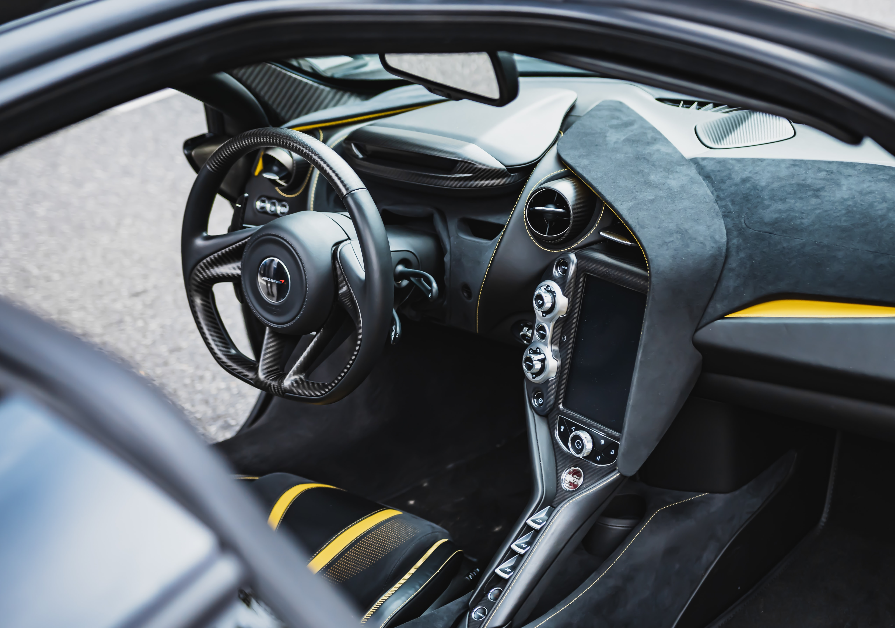

조향장치
조향 장치는 자동차의 주행 방향을 바꾸는 데 필요한 장치로 조작기구, 기어장치, 그리고 링크기구로 이루어져 있다. 조작 기구는 운전자의 스티어링 휠 조작을 통해 발생한 조작력을 조향기어와 링크에 전달하는 부분이고, 기어장치는 조향축의 회전을 약 20:1로 감속하여 조작력을 증가시키면서 조작 기구의 운동 방향을 바꾸어 링크 기구에 전달하는 부분이다. 또 링크기구는 기어 기구의 작동을 앞바퀴에 전달하고 좌우 바퀴의 관계위치를 바르게 지지하는 부분이다. 최근의 자동차에는 조향 성능을 향상시키고자 스티어링 휠의 조작력을 가볍게 해주는 동력 조향 장치(파워 스티어링 휠)를 많이 사용하고 있다.
